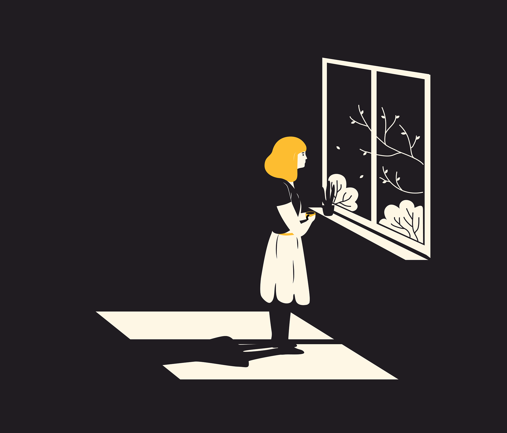

“Sexual objectification dehumanizes girls and women, which contributed toward rape culture and violence against women” - Carrie Baker, author of “Fighting the US Youth Sex Trade, Gender, Race, and Politics” and “The Women’s Movement Against Sexual Harassment.”
The sexualization of girls occurs when a society explicitly or implicitly demonstrates that a girl’s value comes only from her sexual appeal or behavior, when she is sexually objectified, or when sexuality is inappropriately imposed upon her. (Source: Very Well Mind)
Sexualization is everywhere: in children’s TV shows, in movies, in ads, in video games, in retail, in marketing campaigns, in social media posts, in pornography, and more. Girls are often pressured by society to be more sexually attractive to members of the opposite sex and to wear tighter clothing, post sexier images, act more feminine, and engage in inappropriate behaviors like watching porn or sexting. (Source: Very Well Minds)
When girls experience sexualization or objectification first-hand can lead to low self-esteem, anxiety, eating disorders, depression, self-harm, and suicidal thoughts. (Source: Very Well Mind)
Advertisements can set the gauge for what a culture considers normal. When the media reinforces power dynamics that degrade and harm women and make gender-based violence seem trivial, it reduces the likelihood that acts of violence against girls and women will be reported. Regarding dating violence, domestic violence, rape on campus, and sex trafficking, victims are often overlooked unless they come forward and say that they have been assaulted and exploited. (Source: Unicef USA)

When girls are viewed, portrayed, or treated as objects, they start to self-objectify and this can be psychologically damaging, especially when the girls begin to value physical attractiveness or sexual worthiness above intelligence and personal well-being. (Source: Very Well Minds)
All too often, the media sends the message that girls should be pretty, not powerful; noticed, not respected. And this is incredibly harmful, not just to a girl and her development, but to our culture at large. (Source: Unicef USA)